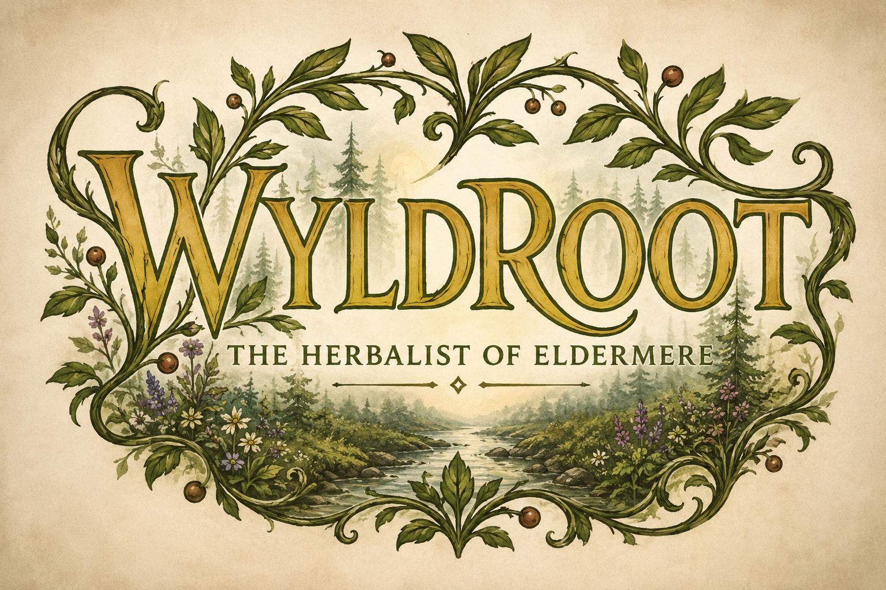
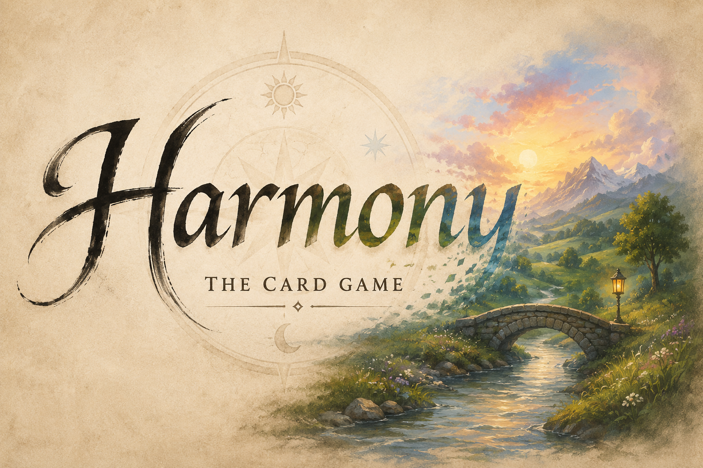

The Work
What We've Built
Paper & Print
Bliss Cotton Paper
Paper worth keeping.Fine cotton paper, letterpress stationery, and wedding goods. Beautiful things finding their people.
Reflection Instrument
The Art of Soulcraft
A lens and mirror for the inner life.A twelve-archetype reflection instrument for understanding the forces that shape how you see, protect, choose, and become.

Card Game
Wyldroot
Forage the ancient forest. Gather what heals.You are the herbalist of Eldermere. The Wyldwood does not want to be mapped. The road you walked yesterday is not the road you'll find today.

Card Game
Harmony
Terrain, seasons, and celestial balance.Collect terrestrial and celestial cards as landscapes, seasons, and natural forces interact. Bring the elements into balance before the natural world shifts again.
Novel
World Tree Chronicles
A story still growing beneath the roots.A boy who dreamwalks. A dreamscape called the Ever After. He sees the real story beneath everyone's surface. He does not yet know what that makes him.